|
|
|
| Home | Previous Page
| Next Page |
Autofabrication Technologies > Light Curing
> Masking:
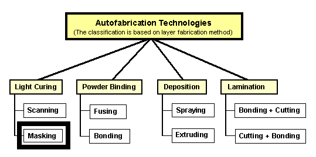
Not: Þemadaki baþlýklarý týklayarak, direkt açýklama sayfalarýný görebilirsiniz.
Bu teknikte, güçlü bir
ýþýk kaynaðý (UV ampül) ve bir ýþýk maskesi aracýlýðý
ile ham fotopolimerden oluþan inþa yüzeyinin istenilen
noktalarý ayný anda kür edilir: Baþka bir deðiþle, maske,
kür olmasý istenmeyen bölgelerin ýþýða maruz kalmasýný
önler.
|
 |
Cubital, SGC
(Solid Ground Curing) |
|
|
SGC sisteminde elektrofotografi
yöntemi ile cam üzerine toner ile maske oluþturur. Mum
destek malzemesi kullanýr.
Scitex
Corporation Ltd. firmasýnda baþlayan Ar-Ge çalýþmalarýnýn
bir sonucu olarak 1987 yýlýnda kurulan Cubital firmasý,
1991 yýlýndan itibaren 14 farklý ülkeye sistem satýþýnýn
ardýndan 2000 yýlýnda kapanmýþtýr. Cihazýn çok
kompleks, bakýmý zor ve pahalý olmasý, 3D Systems gibi
rakiplerinin daha üstün olmasý buna sebep vermiþtir.
Mayýs 2001 tarihinde, Cubital'in
1987'den bu yana aldýðý patentlerin tüm haklarý Objet
Geometries Ltd. tarafýndan devralýnmýþtýr. |
|

SGC (Solid Ground
Curing) teknolojisi ile inþa, sýrasýyla þu iþlemlerin
ard arda tekrarlanmasýyla gerçekleþir:
Yüzeye ince bir tabaka
footpolimer püskürtülür,
Bu iþlemlere paralel
olarak cihazýn baþka bir kýsmýnda lazer yazýcý teknolojisine
benzer bir yöntemle, cam bir plaka üzerine maske oluþturulur.
Iþýðý bloke etmek amacýyla siyah fotokopi toneri kullanýlýr.
Her kesit için ayrý bir maske hazýrlanýr ve kullanýlan
toner bir sonraki maskede tekrar kullanýlýr (çünki normal
yazýcýlarda veya fotokopi cihazlarýnda olduðu gibi toner,
sýcak merdane ile eritilmez, toz halinde kalýr)
Maske, fotopolimer
tabakasý üzerine getirilerek yukarýdan güçlü bir ampül
ile UV (morötesi) ýþýk verilir. Bu esnada maskelenmemiþ
bütün alanlar kür olur. Iþýk yeterince þiddetli olduðundan,
STL'de
olduðu gibi inþa sonrasý ikinci bir kür iþlemine gerek
kalmaz.
Sývý halde kalan fotopolimer,
elektrikli süpürge gibi bir vakum kafasý ile emilir.
Bu sývý ana depoya gider ve tekrar kullanýlabilir.
Vakum ile temizlenen
boþluklara destek malzemesi olarak erimiþ mum püskürtülür.
Mumun çabuk sertleþmesi için ise su ile soðutulan metal
bir plaka ile mumun üzerine bastýrýlýr.
Bir sonraki iþlem için
yüzeyin düzeltilmesi amacýyla tüm yüzey bir freze çakýsý
ile traþlanýr
Bu teknoloji, eðer çok
fazla parça ayný anda inþa edilecekse avantajlýdýr,
STL teknolojisine kýyasla yaklaþýk 8 kat daha hýzlý
bir þekilde çýktý verebilir.
|
| 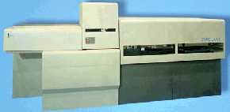Saðda,
SGC 5600 model bir autofabrication cihazý görülmektedir. Bu, dünyadaki
autofabrication cihazlarýnýn içinde en karmaþýk olan ve en fazla
hacim kaplayanýdýr. Ortadaki yüksek kýsým, morötesi lambanýn
bulunduðu maske ile kür etme bölümüdür. Bu cihazýn bir
alt modeline ise SGC 4600 ismi verilmiþtir. |
|
Teknik
özellikler:
|
Solider
4600
|
Solider
5600
|
| Ýnþa
zarfý (X Y Z mm) |
350 x 350 x 350
|
500
x 350 x 500
|
| Katman
kalýnlýðý (mm) |
0.15
|
0.1
- 0.2
|
| Katman
inþa süresi (saniye/katman) |
120
(30 katman/saat)
|
65
(55 katman/saat)
|
| Dikey
inþa hýzý (mm/saat) |
4.5
|
8.3
- 11
|
| Toplam
inþa hýzý |
500
cm^3/saat
|
1311mm^3/saat
|
| Rezolusyon |
0.1mm
X-Y, 0.15mm Z
|
0.1mm
X-Y,
0.15-0.2mm Z
|
| Minimum
detay (feature) büyüklüðü |
0.4mm
|
|
|
 Saðda,
Cubital SGC teknolojisi ile inþa edilmiþ, 12 diþliden
oluþan bir mekanizma görülmektedir, diþlilerden herhangi
birisi döndürüldüðünde diðerleri de buna baðlý olarak
dönmektedir. Ýnþa sýrasýnda þaft ile diþli arasýndaki
boþluklar dahil tüm boþluklara mum doldurulur. Ýnþa
sonrasýnda mekanizma bulaþýk makinesi gibi bir cihazda
basýnçlý sýcak suya maruz býrakýlýr. Böylelikle arada
kalan tüm mum yýkanýr ve diþliler dönmeye baþlar. Saðda,
Cubital SGC teknolojisi ile inþa edilmiþ, 12 diþliden
oluþan bir mekanizma görülmektedir, diþlilerden herhangi
birisi döndürüldüðünde diðerleri de buna baðlý olarak
dönmektedir. Ýnþa sýrasýnda þaft ile diþli arasýndaki
boþluklar dahil tüm boþluklara mum doldurulur. Ýnþa
sonrasýnda mekanizma bulaþýk makinesi gibi bir cihazda
basýnçlý sýcak suya maruz býrakýlýr. Böylelikle arada
kalan tüm mum yýkanýr ve diþliler dönmeye baþlar.
Bu mekanizma Cubital
tarafýndan üretildikten yýllar sonra, suda eriyebilen
destek malzemesini geliþtiren Stratasys
tarafýndan da baþarýyla üretilmiþtir.
|
|
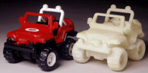Cubital
Firmasýnýn (Ýsrail, ABD) SGC (Solid Ground Curing) teknolojisi
ile inþa edilmiþ (katýlaþmýþ fotopolimer malzemeden
yapýlmýþ) modeller:
Saðdaki model sonradan
elle boyanmýþtýr.
|
| Aþaðýda solda, CMET Firmasýnýn,
LightExpress markalý cihazý ve saðda ise bu cihazýn maskeli
kür ile katmaný oluþturma aþamalarý görülmektedir. Maskeler,
bir makara sistemi üzerine sarýlmýþ þeffaf bir bant üzerine
print edilerek hazýrlanýr. Bu cihazýn satþýna Japonya'da
baþlanmýþtýr (Eylül 2001).
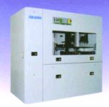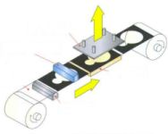
Teijin Seiki, CMET'e devredilmeden
evvel ise sývý kristalli (LCD) maskeleme teknolojisi kullanan
benzer bir autofabrication cihazý üzerinde Ar-Ge çalýþmalarýna
devam ediyordu.
Iþýkla Kür > Tarayarak
> CMET
|
 |
Light Sculpting Inc. |
Efrem Fudim tarafýndan
patenti alýnmýþ ve geliþtirilen bu teknikte, maske olarak
LCD bir ekran kullanýlýr. Bir kabda bulunan fotopolimer
sývýnýn üst yüzeyine temas eden bu cam maske, yukarýsýnda
bulunan bir UV ýþýk kaynaðýyla sývýnýn üst katmanýný kür
ederek katýlaþtýrýr. Maskenin kür olan katmana yapýþma
problemini gidermek için çalýþýlmaktadýr.
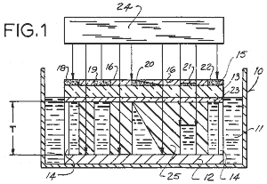
Saðda, Efrem V. Fudim'in
(Milwaukee, WI) 2 Mart 1987'de baþvurduðu, 21 Haziran
1988'de aldýðý 4,752,498 no'lu "Method and apparatus for
production of three-dimensional objects by photosolidification"
baþlýklý ilk patentinden bir çizim görülmekte. Resimde
görüleceði gibi maskedeki yoðunluk deðiþtirilerek açýlý
kür yapýlmasý öngürülmüþ... |
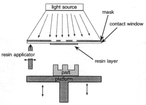
Saðda: Bu cihazýn bir
sonraki versiyonunda ise cam maskeye sürülen fotopolimer
havada kür edilir ve sonra yüzeye yapýþtýrýlýr. Bu, bir
önceki yüzeyin fazla kür olmasýný da engeller... (light
source: kýzýlötesi ýþýk kaynaðý, mask: ýþýk maskesi, contact
window: kontakt penceresi, resin layer: reçine tabakasý,
resin apllicator: reçine kaplayýcý fýrça, resin layer:
reçin tabakasý, part: parça, platform: platform her katman
inþasý sonrasý aþaðý çekilir)
1990 öncesinden bu yana,
uzun yýllar ticari hale gelebilmesi için çalýþýlan bu
teknoloji konusundaki aktivite ve firma web sitesi 2000
yýlýndan sonra durmuþ gözükmektedir.
|
| Perfactory® ismi verilen
autofabrication cihazýnda, inþa malzemesi olarak kullanýlan fotopolimer,
oluþturulacak katmana yayýldýktan sonra UV (kýzýl ötesi)
bir lambadan üretilen ýþýðýn maskeli bir projeksiyon sistemi
ile yönlendirilmesiyle istenilen noktalarda kür edilir.
Sistemin kalbi olan maskeli ýþýk projeksiyon sisteminde
ise, orijinal olarak bilgisayarlý projeksiyon (barkovizyon)
cihazlarý için ABD menþeli "Texas Instruments" firmasý
tarafýndan geliþtirilmiþ olan DLP (Digital Light Processing
/ dijital ýþýk iþleme) teknolojisi kullanýlýr (www.dlp.com).
DLP, silikon bir çip üzerine monte edilmiþ binlerce mikro-aynadan
oluþur. Bu minik aynalarýn açýsý elektronik sinyallerle
iki kademede (on-off) deðiþtirilerek üzerine düþen ýþýðýn
anahtarlamasý yapýlýr. |
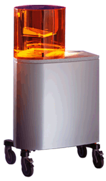 |
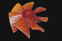
Yukarýda: Henüz
geliþtirme ve test aþamasýndaki Perfactory cihazýyla inþa
edilmiþ bir model görülmektedir.
Solda: Perfactory
cihazýnýn Temmuz 2002'de duyurulan ilk modeli görülmektedir.
|
|
Bu sistemde kullanýlan
teknoloji diðer lazerli kür teknolojilerinden çok farklýdýr:
Sývý fotopolimer, tabaný þeffaf olan bir kabýn altýndan
gönderilen ýþýk ile istenilen noktalarda kür edilir
ve böylece model, katmanlar halinde (tersten) inþa edilir.
Model, inþa süresince, bir platforma yapýþýk þekilde
sývý reçine havuzuna dalmýþ þekildedir, her katman inþa
edildikten sonra platform bir katman kalýnlýðý kadar
yukarý kaldýrýlýr. Yapýþmayý önlemek için tabanýn üzeri
silikon kaplanmýþtýr ve platformu yukarý kaldýrmadan
evvel taban az bir miktar eðilerek modellerin daha rahat
ayrýlabilmesi saðlanýr. Ýnþa süresince kür edilen katman
dýþýndaki tüm parça havayla temas eder vaziyettedir
(STL
sistemlerinde ise parça sürekli sývý fotopolimer havuzu
içindedir.) Eksilen fotopolimer bir pompa ile havuza
eklenir. Not: Denken
Engineering / SLP ve Autostrade
Co. Ltd. / E-DARTS sistemleri de alt yüzeyden kür
metodunu kullanmaktadýr.
Sistemde inþa malzemesi
olarak görünür ýþýkla kür olabilen bir tür fotopolimer
reçine kullanýlýr. Quadrax
firmasý da görünür ýþýkla kür olan bir reçine kullanmýþtý.
Ayný tip fotopolimer reçine kullanan bu her iki cihazýn
ürünleri de kýrmýzý renklidir. Dýþarýdan gelen ýþýkla
reçinenin istenmeyen þekilde kür olmasýný engellemek
için sistem kýrmýzý renkli bir filtre camý içinde çalýþtýrýlýr.
|
|
|
|
4
adet yüzük modelinin inþasý tamamlanmak üzere
|
Ýnþa
sonrasý modeller desteklerinden temizlenip hassas
dökümde kullanýlabilir
|
2004'den sonra geliþtirlen
ve hassas döküm sýrasýnda kül býrakmadan eriyebilen
reçineler sayesinde de bu teknoloji kuyumculuk sektöründe
daha yaygýn olarak kullanýlmaya baþlanmýþtýr.
Bir seferde tüm yüzey
birden kür edilebildiði için bu cihazýn tek lazerli
sistemlere kýyasla daha hýzlý çalýþabilir. Cihazýn hassasiyeti
ve rezolusyonu DLP matrisinindeki aynalarýn sayýsýna
baðlýdýr. Projeksiyon mesafesi arttýkça inþa yüzey alaný
da artmakta yalnýz rezolusyon düþmektedir. Buna baðlý
olarak 2 tip çalýþma modu belirlenmiþtir:
1- PERFACTORY Standard:
Rezolusyon: (SXGA 1280 x 1024 piksel)
Ýnþa Zarfý: 200 x 160 x 230 mm ile 120 x 96 x 230 mm
aralýðýnda
Piksel büyüklüðü: 0.16mm ile 0.093mm arasýnda
Katman
kalýnlýðý: 0.05 - 0.1mm arasý seçilebilir deðiþken.
Ýnþa hýzý: 0.1mm katman kalýnlýðý seçildiðinde, parça
geometrisinden baðýmsýz olarak 10-20mm yükseklik/saat
2- PERFACTORY
Mini:
Rezolusyon:
(SXGA 1280 x 1024 piksel)
Ýnþa Zarfý:
90 x 72 x 230 mm ile 55 x 44 x 230 mm aralýðýnda
Piksel
büyüklüðü: 0.07mm ile 0.043mm arasýnda
Katman
kalýnlýðý: 0.025 - 0.05mm arasý seçilebilir deðiþken.
Ýnþa hýzý: 0.05mm katman kalýnlýðý seçildiðinde, parça
geometrisinden baðýmsýz olarak 10-20mm yükseklik/saat
Malzeme:
Kýrmýzý renkli metakrilit (methacrylate). Diðer malzemeler
geliþtirme safhasýndadýr. Sývý fotopolimer inþa malzemesi
kartuþlar halinde cihaza yüklenmektedir.
Ýlk
defa Euromold 2002'de Almanya'da sergilenen bu sistem
Mart 2003'den sonra ticari hale gelmiþtir.
Harç Yýðma > Sývayarak
> Envisiontec
GmbH
|
| Ýsviçre'nin Lausanne
þehrinde bulunan (EPFL) Ýsviçre Federal Teknoloji Entstitüsü
(Swiss Federal Institute of Technology) bünyesinde geliþtirilen
ve mikrostereolitografi (microstereolithography), kýsaca
Micro STL olarak adlandýran, henüz ticari olmamýþ bu teknoloji
ile 5-10 mikron hassasiyetle parçalar imal edilebilmektedir.
Aþaðýdaki iki resimde sistemin çalýþma prensibi ve deneysel
düzeneðin fotoðrafý görülmektedir: |
LightSource: Iþýk
kaynaðý
Shutter: Deklanþör,
ýþýðýn istenilen sürede fotopolimer yüzeyinde tutulmasýný
saðlar.
Dynamic pattern generator:
Dinamik þablon (maske) üreteci. Her katman inþasý için
farklý bir dijital þablon oluþturulur ve bu gelen ýþýðý
maskeler.
Mirror: Ayna, maskelenmiþ
ýþýðýn fokus optiðine yönlendirmesini yapar.
Focusing optics:
Fokus optiði, ýþýðýn fotopolimer yüzeyine odaklanmasýný
saðlar.
Photoreactor: Iþýk
reaktörü: Iþýk enerjisi ile, bir kapta duran sývý fotopolimer
malzemenin üst katmaný istenilen bölgelerde kür edilierek
sertleþtirilir.
Z-stage: Bir sonraki
katmanýn inþasý için parçayý sývýya (z ekseninde, yani
dikey doðrultuda) daldýran motorlu mekanizma.
Computer: Bilgisayar,
özel geliþtirilmiþ bir yazýlýmla tüm sistemi kontrol eder. |
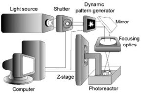
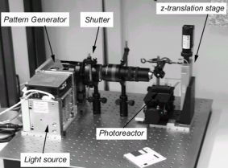 |
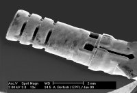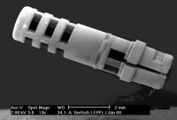
Solda, 8.3 mm boyunda
ve 2.4mm çapýnda bir medikal probun SLA
250 ile üretilmiþ modeli, saðda ise ayný parçanýn
Mikro STL ile üretildiðinde ulaþýlan hassasiyet ve detay
çözünürlüðü açýk bir þekilde görülmekte.
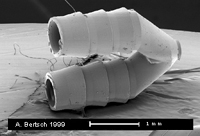
Solda, hücre
biyolojisi uygulamalarýnda kullanýlan yaklaþýk 0.5mm
çaplý flüidik (fluidic) boru baðlantý parçasý görülmekte
(ayný resmi daha
büyük görmek için týklayýnýz). Saðda, 0.4mm
çapýnda üç sarmallý bir yay görülmekte.
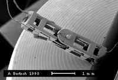Saðda,
yaklaþýk 3 mm boyunda bir elektromekanik tahrik elemaný
gövdesi görülmektedir. Minyatür mekanizmalar Mikro STL
için büyük bir pazar potansiyeli teþkil etmektedir...
Referans Makale:
Arnaud Bertsch, Paul Bernhard, Christian Vogt, Philippe
Renaud, Rapid prototyping of small size objects,
Rapid Prototyping Journal, Vol. 6 No: 4 2000
sayfa. 259-266
|
| Home | Previous Page
| Next Page |
|
|